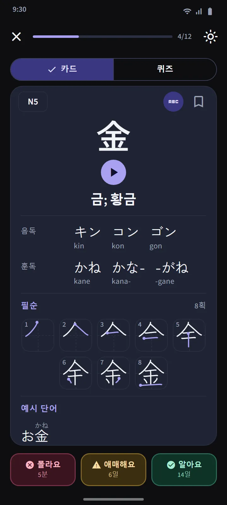
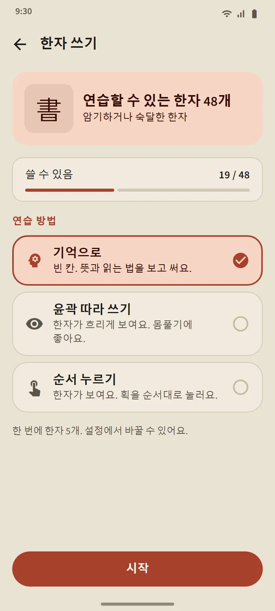

일본 학교 순서로 묶은 25자 세트
한자 탭은 JLPT 레벨별로, 다시 약 25자씩 세트로 나뉘어요. 한 레벨 안의 순서는 일본 학교 교육과정(1학년부터)을 따르고, 그다음 획수가 적은 순이에요. 숫자, 요일 이름, 계절처럼 함께 묶이는 것은 순서를 지켰어요. 세트 행마다 한자, 진행 막대, 암기와 숙달 개수, ‘퀴즈 가능’ 표시나 복습할 개수가 보여요.
| 레벨 | 한자 | 이용 |
|---|---|---|
| N5 | 103 | 무료 |
| N4 | 181 | 프리미엄 |
| N3 | 370 | 프리미엄 |
| N2 | 369 | 프리미엄 |
| N1 | 1,207 | 프리미엄 |


한자 카드와 퀴즈
카드 앞면은 한자만 있어요. 뒷면에는 뜻, 음독과 훈독(원하면 로마자도), 획마다 한 칸씩 그리고 시작점을 표시한 획순 그림, 그 한자를 쓰는 예시 단어가 있어요. 단어 카드와 같은 버튼 세 개로 일정을 다시 잡아요.
세트 퀴즈는 한자 10자가 암기나 숙달이 되면 열리고, 문제는 한자에서 뜻, 뜻에서 한자, 한자에서 읽기의 세 종류예요. 숙달 규칙도 같아서, 서로 다른 사흘 동안 퀴즈에서 맞혀야 해요. 탭 위쪽의 한자 복습은 모든 세트에서 복습할 한자를 모으고, 혼합 퀴즈는 세트를 넘나들며 시험해요.


한자 상세와 특별 덱
한자마다 상세 페이지에 뜻, 단계와 다음 복습, 읽기, 획순 그림, 예시 단어가 있고, 단어 상세 페이지는 구성 한자로 이어져요. 단어처럼 한자에도 북마크, 어려운 한자, 60초 번개 덱이 있고, 홈 화면 빠른 연습 섹션의 스위치로 타일 네 개를 한자용으로 바꿀 수 있어요.


손가락으로 한자 쓰기
암기나 숙달이 된 한자는 써 보며 연습할 수 있어요. 뜻과 읽기만 보여 주고, 한 획씩 쓰면 획마다 모양, 방향, 순서를 오프라인으로 확인해요. 모드는 기억으로, 윤곽 따라 쓰기, 순서 누르기의 세 가지예요. 서로 다른 이틀 동안 도움 없이 기억으로 쓰면 그 한자는 ‘쓸 수 있음’이 돼요.


한자 입문
외우기 전에 한자가 어떻게 이루어지는지 알려 주는 짧은 강의 11개: 음독과 훈독, 각각 언제 쓰이는지, 오쿠리가나, っ나 연탁 같은 소리 변화, 단어째 외우는 읽기, 부수, 획순. 홈 화면의 ‘일본어 기초’ 섹션에서 열 수 있고 무료예요.
데이터 출처
뜻과 읽기는 KANJIDIC(Electronic Dictionary Research and Development Group), 획순은 KanjiVG에서 가져왔고, 둘 다 CC BY-SA 라이선스예요. 한자 레벨은 예전 JLPT 목록을 바탕으로 한 추정치예요. 지금의 JLPT는 공식 한자 목록을 공개하지 않아요.